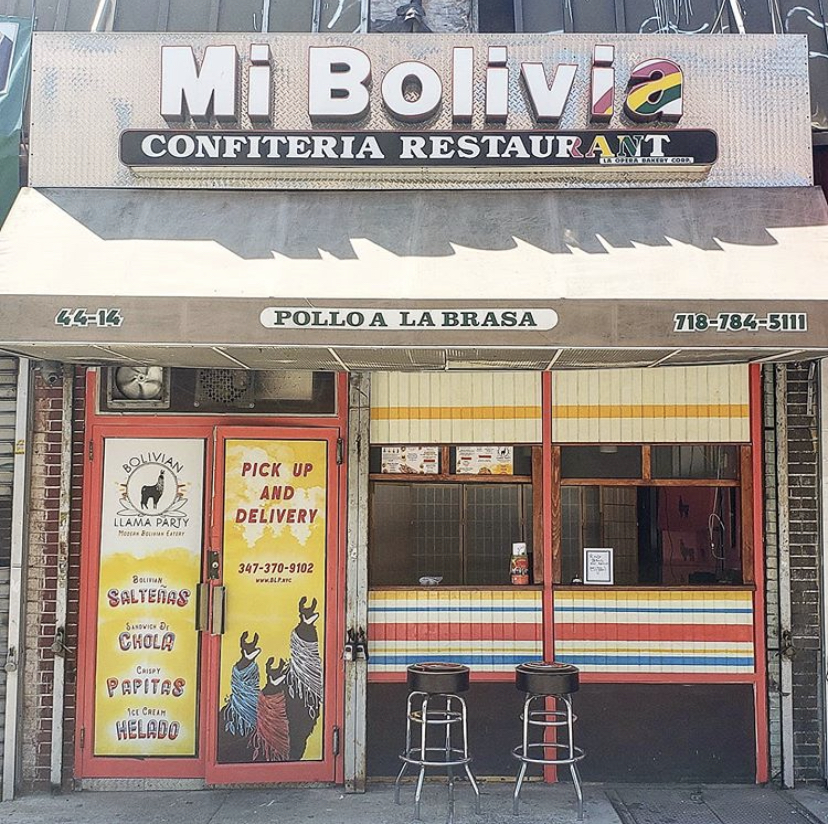

The Bolivian Diaspora Archive Project, an independent community archive project which highlights the Bolivian diaspora community in Queens, NY. Digitized records included family photographs, flyers, magazines as well as the digital video transfer of home movies in Mini DV format. This collection is ongoing and currently holds 50 items.

Mi Bolivia
Sign by Wagner Ramirez in Woodside, Queens in 2008